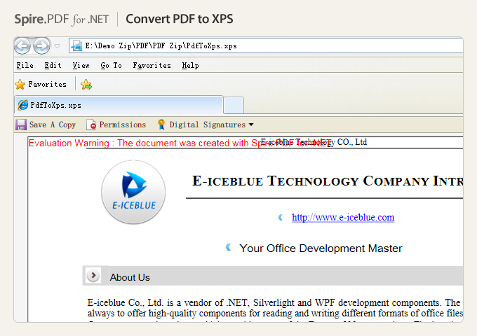
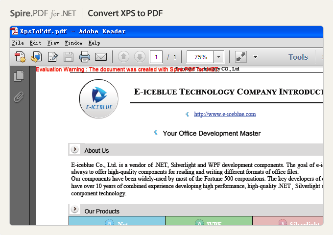

This is a C # example to manage PDF file via a Free C# PDF library. And the code gives you clear information of how to convert PDF to XPS and how to convert XPS to PDF in C#.
As a professional PDF component, Spire.PDF is applied to creating, writing, editing, handling and reading PDF files without any external dependencies within .NET application. Using this .NET PDF library, you can implement rich capabilities to create PDF files from scratch or process existing PDF documents entirely through C#/VB.NET without installing Adobe Acrobat.
Screenshots of convert PDF to XPS:

Screenshots of convert XPS to PDF:

Support Environment
Conversion
Security
How to Download and Install Spire.PDF
Download Spire.PDF for .NET here and you can get a zip package named Free Spire.PDF for .NET Version:3.0. Extract this package and get the .msi file. Double click this file and install Free Spire.PDF for .NET to the specified path on your system.
How to Use DLLS
Users need to add dll files in project as reference to perform Spire.PDF for .NET to compile.
There are several folders, which save dlls for different .NET Framework version under Bin directory. After creating a project, right click project name → Add Reference → Browse → Spire.PDF folder → Bin → .NET 2.0/3.5/4.0/4.5/4.0 ClientProfile
→ Spire.Pdf.dll.
Related Links:
Website: www.e-iceblue.com
Product Home: Free Spire.PDF for .NET
Download: Free Spire.PDF for .NET
Forum: Free PDF Forum